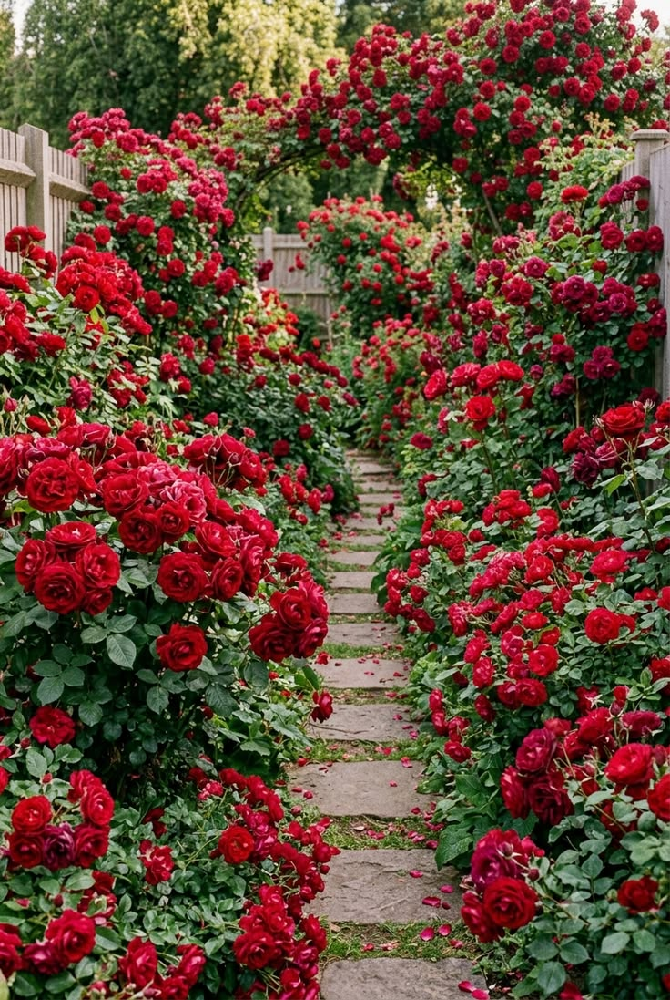
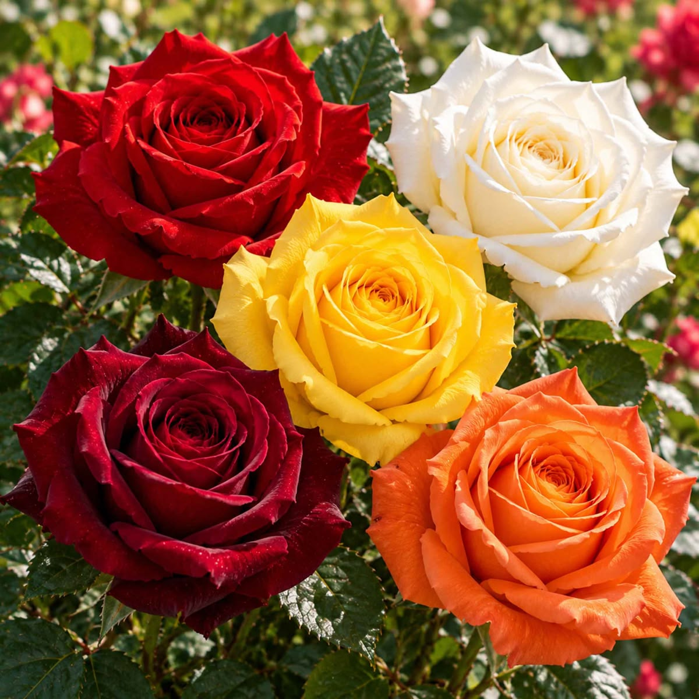
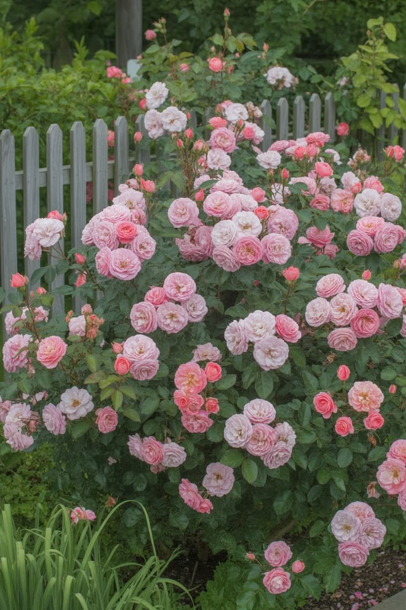
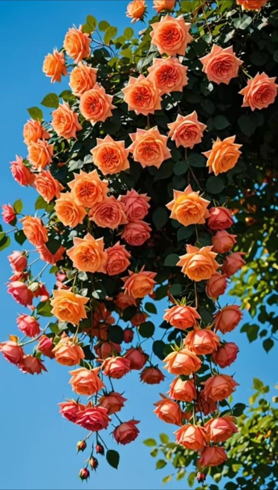
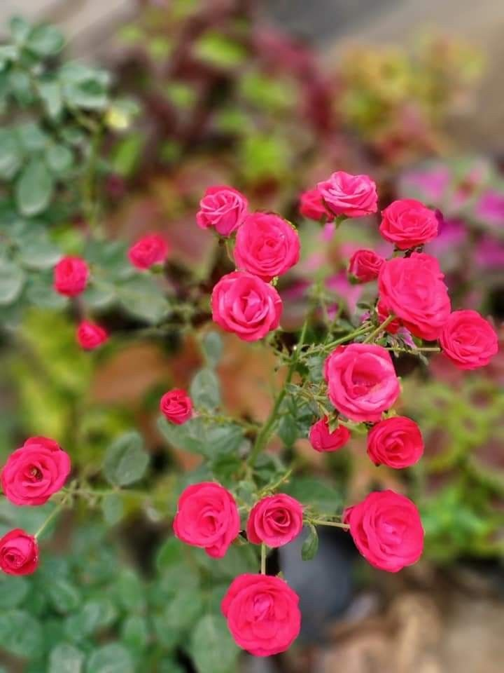
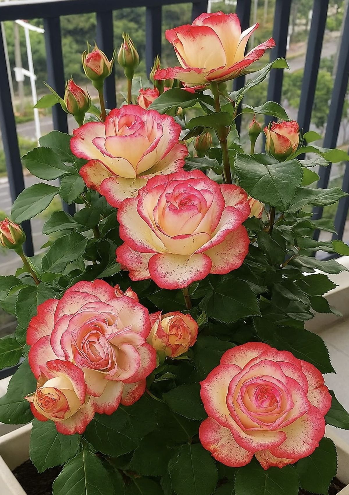
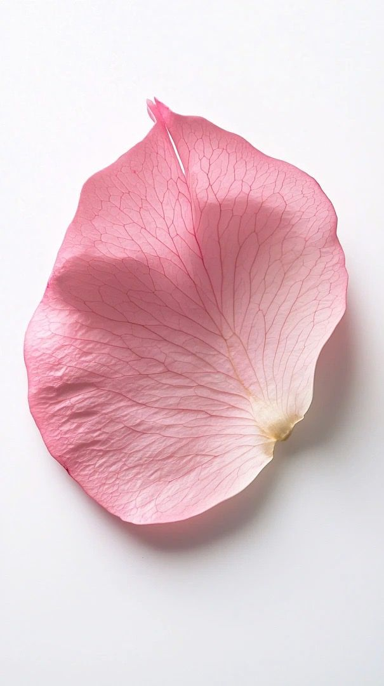
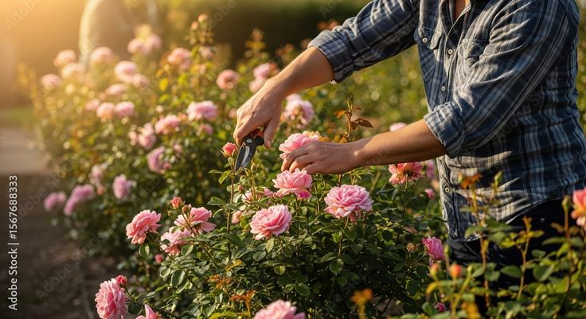

Rose
Rosa
Known for its beautiful petals and enchanting fragrance, the rose is one of the most beloved flowers in the world.

Rosa
Known for its beautiful petals and enchanting fragrance, the rose is one of the most beloved flowers in the world.

Roses belong to the genus Rosa in the Rosaceae family. They are flowering plants known for their beautiful blooms, variety of colors, and often sweet fragrance.
Roses have been cultivated for thousands of years. Today, they are grown in gardens and parks and are widely used as ornamental flowers.
Depending on the variety, roses can grow as shrubs, climbing plants, or compact miniature plants.
Roses come in many forms, each with its own appearance and growing habit.

Known for large, elegant blooms, often growing one flower per stem.

Produces clusters of flowers and often blooms repeatedly.

Long canes can be trained to grow along fences, arches, and trellises.

Usually grows as a bushy plant with a wide range of flower forms.

Compact plants with small flowers, suitable for pots and small gardens.

Often combines large blooms with clusters of flowers.

Red, pink, white, yellow, orange, purple, and many mixed colors.
Some roses have a strong sweet scent, while others have little or no fragrance.
Many garden roses can live for decades with suitable growing conditions and care.
An individual rose flower may last several days to around two weeks, depending on the variety and conditions.
Learn about the basic conditions roses need to grow.
Most roses grow well with at least 6 hours of direct sunlight daily.
Fertile, well-drained soil rich in organic matter is generally suitable.
Water deeply when the soil begins to dry. Avoid keeping the roots constantly wet.
Growing preferences vary by rose variety. Many roses grow best in mild conditions.
Roses can be propagated through methods such as cuttings, grafting, and seeds.

Regular care helps roses stay healthy and produce beautiful flowers.
Water near the base of the plant. Avoid frequently wetting the leaves, as this can encourage fungal diseases.
Remove dead or damaged branches. The best time and method for pruning depend on the type of rose.
Use a suitable rose fertilizer during active growth and follow the product instructions.
Check leaves and stems regularly for pests such as aphids and signs of diseases such as black spot.
Discover other flowers with beautiful blooms and interesting characteristics.